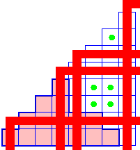
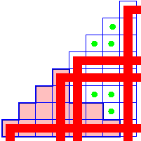

Schubert calculus
Frank Sottile

|  |
The Horn recursion in the Schubert calculus Frank Sottile
|
 |
Work of Klyachko and of Knutson and Tao in the 1990's established the Horn conjecture, which is a recursively defined set of inequalities among eigenvalues of hermitian matrices A, B, and A+B. This used representation theory, Schubert calculus, and combinatorics. A consequence is that other problems in mathematics have a similar Horn recursion, for example when is a Littlewood-Richardson number non-zero? Its geometric counterpart is to determine when a triple of Schubert varieties in a Grassmannian must meet. The partition indices of such a triple of Schubert varieties is called a feasible triple.
The answer is that a triple is feasible if and only if the three partitions satisfy Horn inequalities parametrized by all feasible triples for smaller Grassmannians. In brief, the Schubert calculus on a Grassmannian is controlled (to some degree) by the Schubert calculus on all smaller Grassmannians.
In this talk, I will begin by discussing the Horn inequalities for eigenvalues of hermitian matrices A, B, and A+B, and what they mean for geometry. Then I will discuss Belkale's geometric proof of the Horn recursion. This suggests that perhaps other related feasibility problems in Schubert calculus have a similar recursive description. The last part of my talk will describe a Horn recursion for other problems in the Schubert calculus, discovered in collaboration with Kevin Purbhoo of the University of British Columbia.